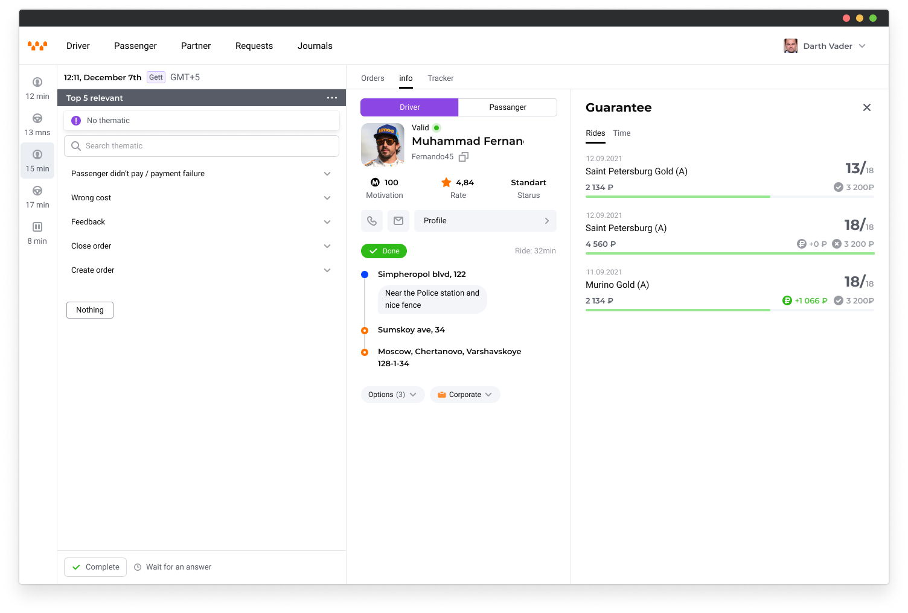
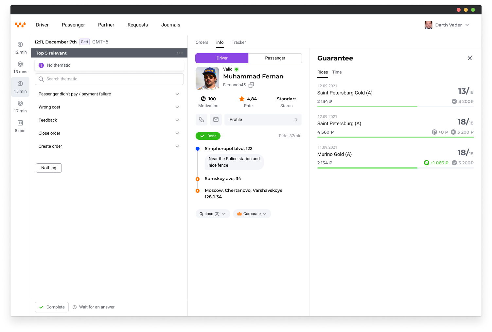
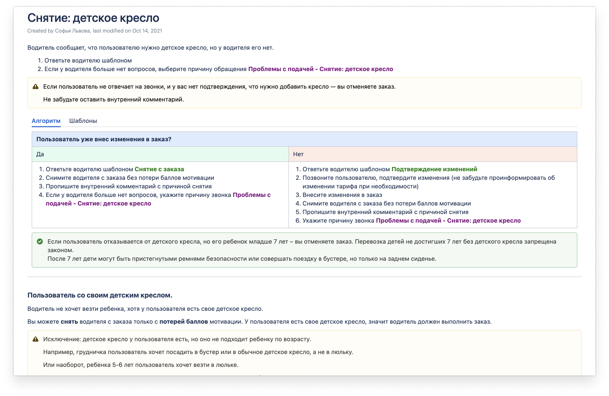
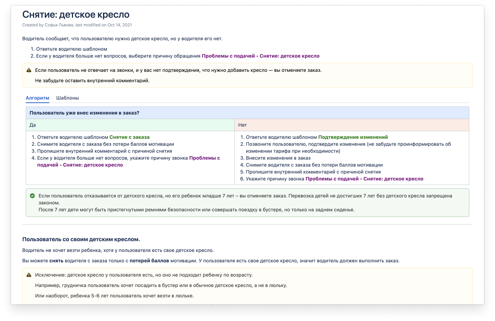
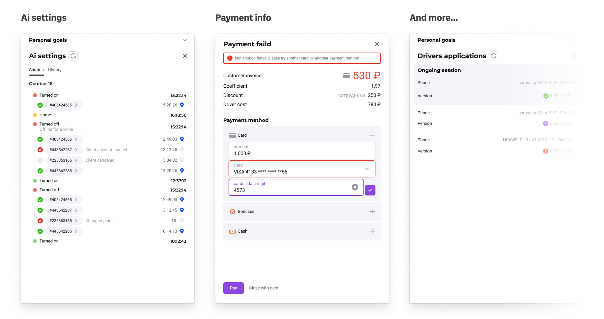
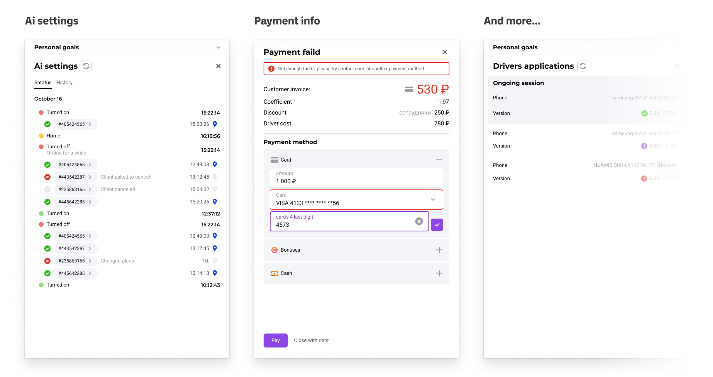

CityMobil
The company operates as an aggregator with two main types of clients: passengers and drivers. Both groups have questions regarding the service. The job of a customer service operator is similar to that of a detective and a psychologist. Although we may not always be able to solve problems faster through a graphical interface, we can collect and provide the necessary information to reduce the time it takes to search for information and process a request.
Problem
The aggregator was the second biggest in the country, but their help desk software was too complicated. New operators had to complete a two-week training course due to the high entry-level requirements. The company lost money due to poor customer support quality, with an average contact time of 360 seconds.
Research
To better understand support operators' issues, I worked as one myself. I collected data on common problems and pain points and interviewed a group of operators for feedback. However, support operators come from diverse backgrounds, including elderly or low-skilled individuals who may resist change and prefer the old interfaces. As a result, about 70% of the initial information I gathered was useless and led me to a dead end.
Hypothesis
My research has shown that the operator's work consists of three parts: communicating with the client, searching for or entering information into a database (for us, it is the same thing, as we collect all the information), and problem-solving or execution. This process can be compared to the work of a detective. The goal is to examine the provided information and make decisions based on it.
Tasks
To develop an operator interface for the support service and Provide it for scaling the service to other projects. Reduce the average contact time to 120 seconds and eliminate open calls or messages.
Metrics for Evaluating Work
- Time per contact
- Percentage of successfuly solved contacts
- Operator training rate
- Interface clarity and predictability
- Versatility of components
Solution
I created a workspace with three contextual components, as shown in the image. These components are assembled depending on the question asked by the person in their request to the operator.
 

Before
There was no convenient tool available to obtain the necessary information. The interface, which provided access to trip data, was overloaded with unnecessary information and did not allow even the simplest problems to be solved without additional training.
Additionally, there was no common data source for quick communication with clients in this service. Each operator had their own table with response templates. This greatly affected the corporate tone of voice.
To resolve the most common problem, "payment problem," an operator had to open 13 tabs and spend 320 seconds or more.
 


After
Main components
Execution
When a customer contacts the help desk, we immediately create a ticket. Using the "execute" component, the operator adds attributes to the ticket that indicate what information to display in the "widget" component. When the operator makes a decision, they use this component to update the ticket's status.
Main components
Overall Information
This component displays general information about the trip, driver, or passenger. The information shown depends on the incoming data or the data chosen by the operator.


Main components
Widgets
Once the operator selects the desired attributes in the execution component, we display the necessary widgets to solve the problem. In some cases, we already know what widgets need to be shown.
The role of a first-line support operator is similar to that of a detective. They interview witnesses and suspects, sift through archives, and then take action based on their findings. The widget component serves as an experienced lieutenant in the archive department, quickly locating relevant information and sometimes even anticipating the detective's needs to make their job easier.


 

Main components
Chats & calls
Support is offered through multiple channels, allowing operators to receive calls and chats. Operators can switch between lines and merge calls. Chats also have the ability to send promo codes, media files, and show response templates.
The chat component needs to be both convenient and unobtrusive, so as not to interfere with the basic work process. To achieve this, we have begun transitioning to a customizable workspace. However, due to the specifics of the people we were working with, we could not give them complete freedom. Instead, we introduced an invisible grid in which everything is located. Chat component can only be moved and resized within that grid to prevent accidental movements from blocking work.

Results
In the end, our workspace was used by approximately 2600 people across the country and 80 partner companies. The service was sent to many ecosystem companies for development, resulting in significant cost savings.
I will gladly tell you more in person.
In numbers
These numbers may not seem impressive for a mass-market product, but for our particular company, they represent success. Our service is now being heavily utilized by all companies within our ecosystem.
76
sec
284
Processing time per issue
60
people
58
Weekly training speed
1800
hours
Of workflow records
170
interviews